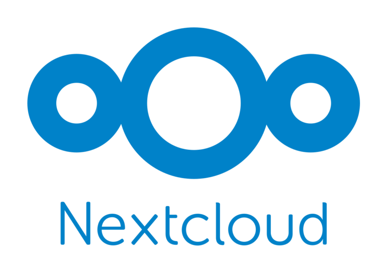
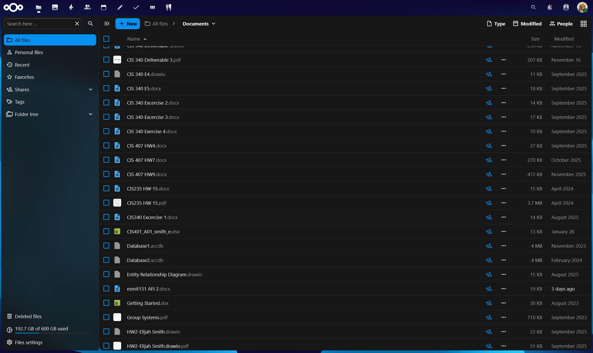
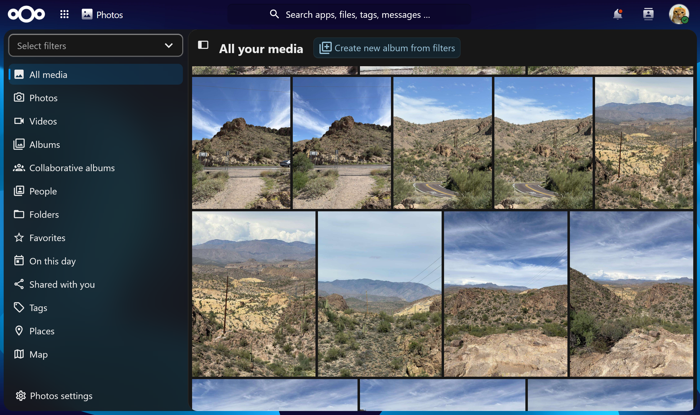

Why?
For years my photos, documents, and notes were all strewn about across many phones, tablets, and computers. Among those, some photos and files were automatically backed up to Google Drive (with its 15 gigabyte free limit), some manual backups on a computer, in short it was a whole mess. I wasn't in control of any of it and I had to pay to get more space. I wanted a cloud I fully owned: my own files, synced across all my devices, that I could access any time without depending on a third-party service deciding the rules or having access to my own private files.

Nextcloud Photos View
What does it do?
Nextcloud is a self-hosted cloud that replaces services like Google Drive and Dropbox. It gives me file storage and sharing, photo albums, calendar, contacts, and more — all synced across my phone, laptop, and desktop. I can share a folder with a friend using a link or invite, and set permissions on exactly who can see or edit what. This also alleviates the issue I have sometimes when I want to share a larger file with friends or family and platforms have size constraints.
In simpler terms, it's my own private cloud that happens to run on the same hardware as all of my other projects.
I have this instance running as the Nextcloud AIO installation running in Docker under a VM on my Proxmox server I have setup. I carved out half of the 2 terabyte SSD to run this instance because while I do want bulk storage for my files, right now having the speed for quick and convenient viewing of my photos and videos. So it is plenty right now but if I do need more space I can start allocating it a portion of my 12 terabyte hard drive.
On the left here I have an example photo showing the options for a picture and how convenient it is to have a one click button to get a publicly sharable link. There are also sharing options that make it so it has a limited number of downloads before the link expires, or expire after a set date or amount of time too. This is all possible and public facing using my Nginx VM setup.
What did I learn?
Setting this up taught me how client-server sync actually works — how the desktop and mobile apps talk to the server, what happens when two devices change the same file, and how versioning and trash recovery protect against mistakes. I also got comfortable managing users and group permissions, and together with my Nginx reverse proxy, getting a secure HTTPS endpoint so I can reach my cloud from anywhere without opening any ports on my home network. I was able to learn users and group permissions because I also provided some friends with their own accounts where they can have all the same features that I have, but I can also control what features they can access.
Windows Explorer View of My Nextcloud Files